소방설비기사(기계분야) (2007-09-02 기출문제)
1과목: 소방원론
1. 0℃ 의 물 1g 이 100℃ 의 수증기가 되려면 몇 cal의 열량이 필요한가?
- 539
- 639
- 719
- 819
(정답률: 49%)

2. 유류 탱크의 화재시 탱크 저부의 물이 뜨거운 열류층에 의하여 수증기로 변하면서 급작스럽 부피 랭창을 일으켜 유류가 탱크 외부로 분출하는 현상을 무엇이라고 하는가?
- 보일오버
- 슬롭오버
- 브레이브
- 파이어볼
(정답률: 80%)
3. 다음 중 연소시 아황산가스를 발생시키는 것은?
- 적린
- 유황
- 트리에틸알루미늄
- 황린
(정답률: 73%)
4. 다음 중 아세톤의 인화점에 가장 가까운 것은?
- -48℃
- -18℃
- -11℃
- -70℃
(정답률: 54%)
5. 알킬알루미늄의 소화에 가장 적합한 소화약제는?
- 마른모래
- 분무상의 물
- 할로겐화합물
- 이산화탄소
(정답률: 75%)
6. 다음 중 제6류 위험물의 공통성질이 아닌 것은?
- 모두 비중이 1 보다 작으며 물에 녹지 않는다.
- 모두 산화성 액체이다.
- 모두 불연성 물질로 액체이다.
- 모두 산소를 함유하고 있다.
(정답률: 43%)
7. 다음 중 화재 발생 시 주수소화를 하면 가장 위험한 물질은?
- 적린
- 마그네슘 분말
- 과염소산칼륨
- 유황
(정답률: 80%)
8. 다음 물질 중 연소범위가 가장 넓은 것은?
- 에틸렌
- 프로판
- 메탄
- 수소
(정답률: 68%)
9. 다음 중 인화성 액체의 화재가 해당되는 것은?
- A급 화재
- B급 화재
- C급 화재
- D급 화재
(정답률: 83%)
10. 동식물유류에서 “요오드값이 크다” 라는 의미와 가장 가까운 것은 무엇인가?
- 불포화도가 높다.
- 불건성유이다.
- 자연발화성이 낮다.
- 산소와 결합이 어렵다.
(정답률: 82%)
11. 다음 중 연소속도와 가장 관계가 깊은 것은?
- 증발속도
- 환원속도
- 산화속도
- 혼합속도
(정답률: 70%)
12. 고층 건축물의 피난계획을 수립할 때의 유의사항으로 적당하지 않은 것은?
- 피난동선은 일상생활의 동선과 일치시킨다.
- 평면계획에 대한 복잡성을 지양하고 피난동선을 단순화한다.
- 피난수단은 원시적인 방법을 고려한다.
- 2 방향보다는 1 방향의 피난로를 만든다.
(정답률: 74%)
13. 실내온도 15℃에서 화재가 발생하여 900℃ 가 되었다면 기체의 부피는 약 몇 배로 팽창되었는가? (단, 압력은 1기압으로 일정하다.)
- 2
- 4
- 6
- 8
(정답률: 53%)
14. 중력가속도를 9.8m/s2로 가정할 경우 질량 100kg 인 대형 소화기의 중량은 얼마인가?
- 98N
- 100N
- 980N
- 2000N
(정답률: 77%)
15. 수소 1kg 이 완전연소할 때 생성되는 수증기는 몇 kmol 인가?
- 0.5
- 1
- 2
- 4
(정답률: 41%)
16. 다음 위험물 중 pH 9 정도의 물을 보호액으로 하여 보호액 속에 저장·보관하는 물질은?
- 나트륨
- 탄화칼슘
- 칼륨
- 황린
(정답률: 70%)
17. 다음 중 자연발화가 일어나기 쉬운 조건이 아닌 것은?
- 열전도율이 클 것
- 적당량의 수분이 존재할 것
- 주위의 온도가 높을 것
- 표면적이 넓을 것
(정답률: 72%)
18. 정전기에 의한 발화를 방지하기 위한 예방대책으로 옳지 않은 것은?
- 접지 시설을 한다.
- 습도를 70% 이상으로 유지한다.
- 공기를 이온화 한다.
- 부도체 물질을 사용한다.
(정답률: 74%)
19. 건축물의 내화구조에서 바닥의 경우에는 철근콘크리트조의 두께가 몇 ㎝ 이상이어야 하는가?
- 7
- 10
- 12
- 15
(정답률: 80%)
20. 화재시 이산화탄소를 사용하여 화재를 진압하려고 할 때 산소의 농도를 13vol% 로 낮추어 화재를 진압하려면 공기 중 이산화탄소의 농도는 약 몇 vol% 가 되어야 하는가?
- 18.1
- 28.1
- 38.1
- 48.1
(정답률: 72%)
2과목: 소방유체역학
21. 할로겐 화합물 소화설비에서 할론1211 약제의 분자식은?
- CBrClF2
- CBr2ClF
- CCl2BrF
- BrC2ClF
(정답률: 67%)
22. 에테르, 케톤, 에스테르 등 수용성 가연물의 소화에 가장 적합한 포 소화약제는?
- 단백포
- 수성막포
- 불화단백포
- 내알콜포
(정답률: 53%)
23. 제2종 분말 소화약제 열분해 되었을 때 생성되는 물질이 아닌 것은?
- CO2
- H2O
- H3PO4
- K2CO3
(정답률: 74%)
24. 토출량과 토출 압력이 각각 Q L/min, P kPa이고, 특성곡선이 서로 같은 두 대의 소화 펌프를 병렬 연결하여 두 펌프를 동시 운전하였을 경우 총 토출량과 총 토출 압력은 각각 어떻게 되는가? (단, 토출측 배관의 마찰손실은 무시한다.)
- 총 토출량 Q L/min, 총 토출압력 P kPa
- 총 토출량 2Q L/min, 총 토출압력 2P kPa
- 총 토출량 Q L/min, 총 토출압력 2P kPa
- 총 토출량 2Q L/min, 총 토출압력 P kPa
(정답률: 63%)
25. 직경 100mm인 관속으로 물이 3 m/s의 평균속도로 흐르고 있을 때 유량은 몇 m3/min 인가?
- 0.23
- 1.41
- 2.35
- 14.13
(정답률: 50%)
26. 수두 100 mmAq로 표시되는 압력은 몇 Pa인가?
- 0.098
- 0.98
- 9.8
- 980
(정답률: 59%)
27. 두 지점의 압력차가 수은(비중 13.6) 기둥으로는 4㎝이고, 또 다른 액체 기둥으로는 25㎝ 라면 이 액체의 비중은?
- 1.176
- 2.176
- 3.176
- 4.176
(정답률: 54%)
28. 펌프 캐비테이션(Cavitation) 방지대책으로 잘못된 것은?
- 펌프의 설치위치를 낮춘다.
- 마찰 손실수두를 작게 한다.
- 단흡입을 양흡입으로 바꾼다.
- 펌프 회전수를 높게 한다.
(정답률: 68%)
29. 압력강하 △P, 밀도 p, r길이L, 유량 Q에서 얻을 수 있는 무차원 수는?
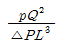
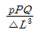
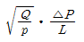
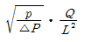
(정답률: 36%)
30. 그림에서 마찰을 무시하고, 날개가 제트의 방향을 180° 바꾼다고 했을 때 제트에 의해서 날개에 작용하는 힘의 크기는 몇 N인가?
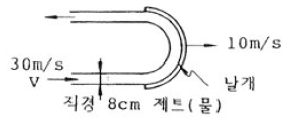
- 2010
- 4020
- 8040
- 6200
(정답률: 34%)
31. 그림과 같이 직경 10 ㎝의 오리피스(orifice)가 큰 저장탱크의 아래 부분에 부착되어 있다. 수면에서 오리피스까지의 물 깊이가 3 m로 일정하게 유지된다고 가정할 때 오리피스에서 방출되는 유량은 몇 m3/s인가? (단, 오리피스에서의 속도계수(Cv)는 0.9, 수축계수(Cc)는 0.6이다.)
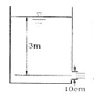
- 0.0283
- 0.0325
- 0.0437
- 0.⑤42
(정답률: 32%)
32. 관마찰계수가 0.022인 지름 50 mm 관에 물이 흐르고 있다. 이 관에 부차적 손실계수가 각각 10, 1.8인 밸브와 티(Tee)가 결합되어 있을 경우 관의 상당길이는 몇 m 인가?
- 23.3
- 24.9
- 25.4
- 26.8
(정답률: 53%)
33. 호수 수면 아래에서 지름 d인 공기 방울이 수면으로 올라오면서 지름이 1.5배로 팽창하였다. 공기방울의최초 위치는 수면에서부터 몇 m 되는 곳인가? (단, 이 호수의 대기압은 750mmHg, 수은의 비중은 13.6, 공기방울 내부의 공기는 Boyle의 법칙에 따른다고 한다.)
- 34.4
- 24.2
- 12.0
- 43.3
(정답률: 43%)
34. 합성 계면 활성제포의 고발포용 소화약제로 사용하는 3가지 종류가 아닌 것은?
- 1% 형
- 1.5% 형
- 2% 형
- 2.5% 형
(정답률: 45%)
35. 실내의 난방용 방열기(물-공기 열교환기)에는 대부분 방열핀(fin)이 달려 있다. 그 주된 이유는?
- 열전달 면적이 증가된다.
- 복사 열전달이 촉진된다.
- 재료비를 절감할 수 있다.
- 겨울철 동파를 막는다.
(정답률: 68%)
36. 수평원관으로 일정량의 물이 층류상태로 흐를 때 관직경을 2배로 하면 손실수두는 얼마가 되는가?
- 1/4배
- 1/8배
- 1/16배
- 1/32배
(정답률: 32%)
37. 이상기체의 등엔트로피 과정에 대한 설명 중 틀린 것은?
- 폴리트로픽 과정의 일종이다.
- 가역단열과정에서 실현된다.
- 온도가 증가하면 압력이 증가한다.
- 온도가 증가하면 비체적이 증가한다.
(정답률: 65%)
38. 공기가 1 MPa, 0.01m3, 130℃의 상태에서 0.2 MPa, 0.⑤m3로 변하였을 때 공기의 온도는 몇 K 인가?
- 399.23
- 401.21
- 403.15
- 4⑤.34
(정답률: 54%)
39. 직경이 13 mm인 옥내소화전의 관창에서 방출되는 물의 압력(계기압력)이 230 kPa이라면 10분 동안의 방수량은 몇 m3 인가?
- 1.7
- 3.6
- 5.2
- 7.4
(정답률: 47%)
40. 정상, 비압축성 유체의 흐름에서 다음과 같은 흐름은 가능한가?
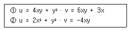
- ① 불가능, ② 불가능
- ① 불가능, ② 가능
- ① 가능, ② 불가능
- ① 가능, ② 가능
(정답률: 45%)
3과목: 소방관계법규
41. 다음 중 면적이나 구조에 관계없이 물분무등소화설비를 반드시 설치하여야 하는 특정소방대상물은?
- 주차장
- 항공기격납고
- 발전실, 변전실
- 주차용건축물
(정답률: 66%)
42. “무창층”이란 지상층 중 개구부의 면적의 합계가 당해 층의 바닥면적의 30분의 1 이하가 되는 층을 말한다. 다음 중 개구부의 요건으로 알맞은 것은?
- 해당 층의 바닥면으로부터 개구부 밑부분까지의 높이가 1.5m 이내일 것
- 개구부의 크기가 지름 50㎝ 이상의 원이 내접할 수 있을 것
- 개구부는 도로 또는 차량이 진입할 수 없는 빈터를 향할 것
- 내부 또는 외부에서 쉽게 파괴 또는 개방할 수 없을 것
(정답률: 59%)
43. 방화관리자를 두어야 할 특정소방대상물 중 1급 방화관리 대상물에 해당되는 것은?
- 전력용 또는 통신용 지하구
- 가연성가스를 1천톤 이상 저장·취급하는 시설
- 자동화재탐지설비를 설치한 연면적 3000m2 인 소방대상물
- 물분무소화설비를 설치한 연면적 5000m2 인 소방대상물
(정답률: 45%)
44. 다음 중 소방시설관리업자에게 연1회 이상 종합정밀점검을 받아야 하는 대상으로 알맞은 것은?
- 연면적 3000m2 이상 특정소방대상물
- 연면적 4000m2 이상 특정소방대상물
- 연면적 3000m2 이상이고 층수가 15층인 아파트
- 스프링클러설비가 설치된 연면적 5000m2 이상 특정소방대상물
(정답률: 58%)
45. 방염대상물품 중 제조 또는 가공공정에서 방염처리를 하여야 하는 물품이 아닌 것은?
- 영화상영관에 설치하는 스크린
- 두께가 2mm 미만인 종이벽지
- 바닥에 설치하는 카페트
- 창문에 설치하는 브라인드
(정답률: 65%)
46. 소방시설관리업에 대한 영업정지를 명하는 경우로서 영업정지처분에 갈음하며 과징금을 부과할 수 있는 바, 다음 중 과징금처분과 관련된 내용으로 옳지 않은 것은?
- 5000만원 이하의 과징금을 부과할 수 있다.
- 과징금의 처분권자는 시·도지사이다.
- 시·도지사는 과징금을 납부하여야 하는 자가 납부기한까지 이를 납부하지 아니한 때에는 지방세체납처분의 예에 따라 이를 징수한다.
- 과징금을 부과하는 위반행위의 종별 · 정도 등에 따른 과징금의 금액 그 밖의 필요한 사항은 행정자치부령으로 한다.
(정답률: 42%)
47. 다음 중 운송책임자의 감독 또는 지원을 받아 운송하여야 하는 위험물은?
- 과염소산·질산
- 알킬알루미늄·알킬리튬
- 아염소산염류·과염소산염류
- 마그네슘·질산염류
(정답률: 53%)
48. 소방대상물에 대한 개수명령권자는?
- 소방방재청장
- 시 · 도지사
- 소방본부장 또는 소방서장
- 행정자치부장관
(정답률: 64%)
49. 형식승인을 얻지 아니한 소방용기계·기구를 판매의 목적으로 진열했을 때의 벌칙으로 옳은 것은?(관련 규정 개정전 문제로 여기서는 기존 정답인 1번을 누르면 정답 처리됩니다. 자세한 내용은 해설을 참고하세요.)
- 3년 이하의 징역 또는 1500만원 이하의 벌금
- 2년 이하의 징역 또는 1500만원 이하의 벌금
- 1년 이하의 징역 또는 1000만원 이하의 벌금
- 1년 이하의 징역 또는 500만원 이하의 벌금
(정답률: 52%)
50. 지정수량 이상의 위험물을 임시로 저장·취급 할 수 있는 기간은?
- 100일 이상
- 60일 이상
- 90일 이내
- 120일 이내
(정답률: 72%)
51. 위험물 탱크안전성능시험자가 되고자 하는 자는?
- 행정자치부장관의 지정을 받아야 한다.
- 시·도지사에게 등록하여야 한다.
- 시·도 소방본부장의 지정을 받아야 한다.
- 소방서장에게 등록하여야 한다.
(정답률: 60%)
52. 화재경계지구안의 소방대상물에 대한 소방검사를 거부한자에 대한 벌칙은?
- 200만원 이하의 과태료
- 100만원 이하의 벌금
- 200만원 이하의 벌금
- 300만원 이하의 벌금
(정답률: 32%)
53. 소방시설 설치유지 및 안전관리에 관한 법률 시행령상 “피난층” 에 대한 용어의 정의로 가장 알맞은 것은?
- 지상 1층
- 2층 이상으로 피난에 용이한 층
- 지상에 통하는 직통계단이 있는 층
- 곧바로 지상으로 갈 수 있는 출입구가 있는 층
(정답률: 59%)
54. 다음 중 하자 보수의 보증기간이 다른 소방시설은?
- 자동식소화기
- 비상경보설비
- 무선통신보조설비
- 유도등 및 유도표지
(정답률: 57%)
55. 다음 중 소방용수시설인 저수조의 설치기준으로 옳지 않은 것은?
- 지면으로부터의 낙차가 4.5m 이하일 것
- 흡수부분의 수심이 0.5m 이상일 것
- 흡수관의 투입구가 사각형의 경우에는 한 변의 길이가 60㎝ 이상일 것
- 저수조에 물을 공급하는 방법은 상수도에 연결하여 수동으로 급수되는 구조일 것
(정답률: 48%)
56. 다음 중 소방활동장비 및 설비의 종류 · 규격과 국고보조산정을 위한 기준가격을 정하는 것은?
- 소방기본법
- 소방기본법시행규칙
- 소방방재청예규
- 시 · 도조례
(정답률: 36%)
57. 다음 중 화재예방·소방활동 또는 소방훈련을 위하여 사용되는 소방신호의 종류로 볼 수 없는 것은?
- 출동신호
- 해제신호
- 발화신호
- 훈련신호
(정답률: 58%)
58. 다음 중 화재경계지구의 지정권자는?
- 시장·군수·구청장
- 시·도지사
- 소방본부장 또는 소방서장
- 시장·군수
(정답률: 66%)
59. 소방시설공사업 등록신청시 제출하여야 할 자산평가액 또는 기업진단보고서는 신청일 전 최근 며칠 이내에 작성한것이어야 하는가?
- 90일
- 120일
- 150일
- 180일
(정답률: 64%)
60. 소방시설공사업자의 시공능력 평가방법에 있어서 경력 평가액 산출 공식은?
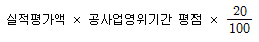
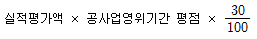
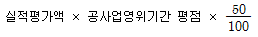
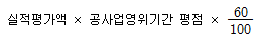
(정답률: 36%)
4과목: 소방기계시설의 구조 및 원리
61. 스프링클러설비의 화재안전기준 상 소방 대상물의 층마다 설치하는 스프링클러설비의 제어밸브는 그 층 바닥면으로부터 몇 m 높이에 설치하여야 하는가?
- 0.8 이상 1.5 이하
- 0.5 이상 1.0 이하
- 0.3 이상 1.3 이하
- 1.0 이상 2.0 이하
(정답률: 75%)
62. 이산화탄소소화설비의 화재안전기준상 이산화탄소소화설비의 분사헤드 노즐은 20℃에서 하나의 노즐마다 몇 kg/min 이상의 소화약제를 방사할 수 있어야 하는가?
- 20
- 30
- 40
- 60
(정답률: 66%)
63. 피난기구의 화재안전기준상 피난기구를 설치하여야 할 소방 대상물 중 피난기구의 2분의 1을 감소할 수 있는 조건이 아닌 것은?
- 주요구조부가 내화구조로 되어 있을 것
- 비사용 엘리베이터(elevator)가 설치되어 있을 것
- 직통계단인 피난계단 또는 특별피난계단이 2 이상 설치되어 있을 것
- 건널복도 양단의 출입구에 자동폐쇄장치를 한 갑종방화문(방화샷다를 제외한다)이 설치되어 있을 것
(정답률: 78%)
64. 제연설비의 화재안전기준상 제연설비의 제연구역 구획에 대한 내용 중 잘못된 것은?
- 통로상의 제연구역은 보행중심선의 길이가 60m를 초과하지 아니할 것
- 하나의 제연구역은 직경이 최대 50m인 원안에 들어갈 수 있을 것
- 하나의 제연구역 면적은 1000m2 이내로 할 것
- 거실과 통로는 상호 제연구획할 것
(정답률: 67%)
65. 포소화설비의 자동식 기동장치에 사용되는 폐쇄형 스프링클러헤드에 대한 내용 중 잘못된 것은?
- 하나의 감지장치 경계구역은 하나의 층이 되도록 할 것
- 표시온도가 79℃ 미만인 것을 사용할 것
- 1개의 스프링클러헤드의 경계 면적은 20m2 이하로 할 것
- 부착면의 높이는 바닥으로부터 3m 이하로 할 것
(정답률: 52%)
66. 옥외소화전설비의 화재안전기준상 옥외 소화전의 설치개수가 2개인 경우 이 설비의 수원 저수량은 최소 몇 m3 이상이 되어야 하는가?
- 7
- 14
- 21
- 28
(정답률: 69%)
67. 분말소화설비의 화재안전기준상 제 1종 분말을 사용한 전역 방출 방식의 분말 소화설비에 있어서 방호구역 1 m3 에 대한 소화약제의 양은?
- 0.60 kg
- 0.36 kg
- 0.24 kg
- 0.72 kg
(정답률: 65%)
68. 스프링클러설비의 화재안전기준상 펌프의 성능시험배관에 관한 설명으로 틀린 것은?
- 성능시험배관은 펌프의 토출측에 설치된 개폐밸브 이전에서 분기하여 설치한다.
- 유량측정장치를 기준으로 전단 직관부에 개폐밸브를 설치한다.
- 유량측정장치는 성능시험배관의 직관부에 설치한다.
- 펌프의 정격토출량의 250%까지 측정할 수 있는 성능이 있어야 한다.
(정답률: 73%)
69. 스프링클러설비의 화재안전기준상 스프링클러헤드 설치장소의 최고 주위온도가 1⑤℃인 경우에 폐쇄형 스프링클러헤드는 표시온도가 몇 ℃ 인 것을 사용하여야 하는가?
- 79℃ 이상, 121℃ 미만
- 121℃ 이상, 162℃ 미만
- 162℃ 이상, 200℃ 미만
- 200℃ 이상
(정답률: 47%)
70. 옥내소화전 설비에서 사용하고 있는 H = h1 + h2 + 17의 식에서 H 는 무엇을 나타내는 식인가? (단, h1 : 소방용호스 마찰손실 수두(m) h2 : 배관의 마찰손실 수두(m))
- 내연기관의 용량
- 필요한 낙차
- 소방용호스 마찰손실 수두
- 배관의 마찰손실 수두
(정답률: 55%)
71. 이산화탄소소화설비의 화재안전기준상 이산화탄소소화설비의 배관설치 기준으로 적합하지 않은 것은?
- 이음이 없는 동 및 동합금관으로서 고압식은 16.5 MPa 이상의 압력에 견딜 수 있는 것
- 배관의 호칭구경이 20 mm 이하인 경우에는 스케줄 20 이상인 것을 사용할 것
- 고압식의 경우 개폐밸브 또는 선택밸브의 1차측 배관부 속은 호칭압력 4.0 MPa 이상의것을 사용할 것
- 배관은 전용으로 할 것
(정답률: 65%)
72. 소화기구의 화재안전기준상 소화설비가 설치되지 아니한 소방대상물의 보일러실에 자동확산 소화용구를 설치하려한다. 보일러실 바닥면적이 23 m2이면 자동확산 소화용구는 몇 개를 설치하여야 하나?
- 1개
- 2개
- 3개
- 4개
(정답률: 31%)
73. 수동식소화기의 형식승인 및 검정기술기준상 소화기를 정상적인 조작방법으로 방사할 때 방사성능으로 틀린 것은?
- 방사조작완료 즉시 소화야제를 유효하게 방사할 수 있어야 한다.
- 섭씨 20±2도에서의 방사시간은 충전소화약제의 중량이 700그램 미만인 것은 8초 이상이어야 한다.
- 방사거리가 소화에 지장 없을 만큼 길어야 한다.
- 충전된 소화약제의 용량 또는 중량이 700그램 미만인 것은 85퍼센트 이상의 양이 방사되어야 한다.
(정답률: 58%)
74. 청정소화약제소화설비의 화재안전기준상 할로겐화합물 청정소화약제 산출 공식은? (단, W : 소화약제의 무게(kg), V : 방호구역의 체적(m3), S : 소화약제별 선형상수(K1+K2×t)(m3/kg), C : 체적에 따른 소화약제의 설계농도(%), t : 방호구역의 최소예상온도(℃) 이다.)
- W = V / S × [ C / (100-C) ]
- W = V / S × [ (100-C) / C ]
- W = S / V × [ C / (100-C) ]
- W = S / V × [ (100-C) / C ]
(정답률: 43%)
75. 물 분무 소화설비 대상 공장에서 물 분무 헤드의 설치 제외 장소로서 맞지 않은 것은?
- 고온의 물질 및 증류범위가 넓어 끓어 넘치는 위험이 있는 물질을 저장하는 장소
- 물에 심하게 반응하여 위험한 물질을 생성하는 물질을 취급하는 장소
- 운전시에 표면의 온도가 260℃ 이상으로 되는 등 직접 분무를 하는 경우 그 부분에 손상을 입힐 우려가 있는 기계장치 등이 있는 장소
- 표준방사량으로 당해 방호대상물의 화재를 유효하게 소화하는데 필요한 적정한 장소
(정답률: 70%)
76. 상수도소화용수설비의 설치기준 설명으로 맞지 않는 것은?
- 호칭지름 75mm 이상의 수도배관에 호칭지름 100mm 이상의 소화전을 접속하여야 한다.
- 소화전항은 소화전으로부터 5m 이내의 거리에 설치한다.
- 소화전은 소화자동차등의 진입이 쉬운 도로변 또는 공지에 설치한다.
- 소화전은 소방대상물의 수평투영면의 각 부분으로부터 140m 이하가 되도록 설치한다.
(정답률: 59%)
77. 다음 중 옥외소화전의 표시사항으로 틀린 것은?
- 개별검정번호
- 제조연도
- 형식승인번호
- 제조업체명
(정답률: 46%)
78. 연결살수설비의 화재안전기준상 연결살수설비전용헤드를 사용하는 경우 하나의 배관에 부착하는 살수헤드의 개수가 3개일 때 배관의 구경은 몇 mm 이상이어야 하는가?
- 32
- 40
- 50
- 60
(정답률: 71%)
79. 옥내소화전설비의 화재안전기준에서 옥내소화전설비의 배관설치기준에 적합하지 않은 것은?
- 배관은 배관용 탄소강관(KS D 3507) 또는 압력배관용 탄소강관(KS D 3562)이나 이와 동등 이상의 강도 등을 가진 것으로 하여야 한다.
- 펌프의 토출측 배관은 공기고임이 생기지 아니하는 구조로 하고 여과장치를 설치하여야 한다.
- 연결송수관설비의 배관과 겸용할 경우의 주 배관은 구경 100mm 이상, 방수구로 연결되는 배관의 구경은 65mm 이상의 것으로 하여야 한다.
- 동결방지조치를 하거나 동결 우려가 없는 장소에 설치 하여야 한다.
(정답률: 35%)
80. 분말소화설비의 가압식저장용기에 설치하는 안전밸브의 작동압력은 몇 MPa 이하 인가? (단, 내압시험압력은 25.0 MPa, 최고사용압력은 5.0 MPa로 한다.)
- 4.0
- 9.0
- 13.9
- 20.0
(정답률: 42%)